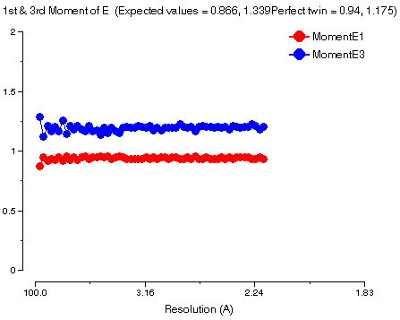
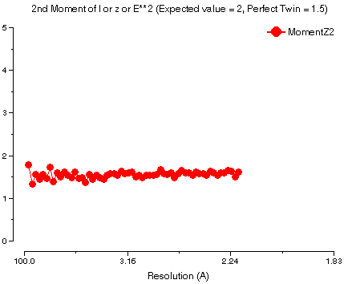
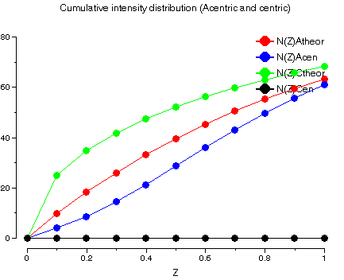

See also the tutorial worksheet.
The following diagram shows the programs involved in data reduction and data processing (Denzo, Scalepack and d*trek are not part of CCP4):
As shown, there is a choice of routes through these programs depending mainly on which of MOSFLM/d*trek/Denzo you want to use for indexing and integration.
The following tasks are available in the CCP4i module Data Reduction:
The example in the tutorial shows no twinning. For comparison, here is an example that does show twinning (Barnase data in P3(2), twin fraction 0.3, twinning operator -h,-k,l). The 1st and 3rd moments of E for acentric data look like:

The lines give approximately E1=0.93 and E3=1.18 i.e. close to the predicted values for twinned data. The result is even more clear-cut for the 4th moment of E (2nd moment of intensity):

where the value is E4=1.55 (cf. 2 for untwinned and 1.5 for perfectly twinned). Finally, the cumulative intensity distribution looks like

The sigmoidal shape of N(Z)Acen is typical of twinned data. Note there are no centric reflections in P3(2).
Back to the index.